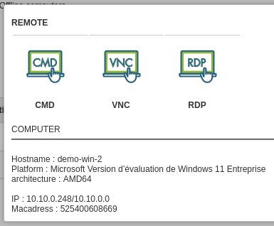
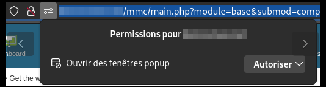

Install Medulla (from download link)¶
Requirements¶
Medulla need to be installed on Debian linux server, Debian 12 (suggested Partitioning / 20Go ext4 and /var 400Go XFS.
Install Medulla server¶
Once downloaded, run the following script like:
source install.sh
Wait until the installation process ends, a summarize will show all needed password (copy in safe place).
To access Medulla interface
ou
Install Medulla agent¶
Medulla agent is downloadable from
http://dns-server/downloads/win
Medulla agent can be installed manually or silently
Medulla-Agent-windows-FULL-latest.exe /S
The installation process will continue after installation ends, it will install all dependencies.
It ends when the computer appears in Medulla.

First step¶
At logon, discover the main menu.
Remote desktop example¶
Do a remote control, find your computer, click on « Remote control »

Select the remote desktop type to use.

A new tab will be open with remote desktop.
Don’t forget to accept popup on your browser
